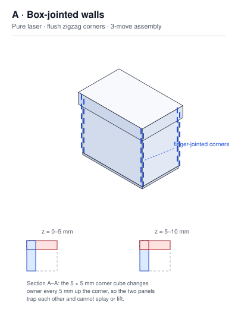
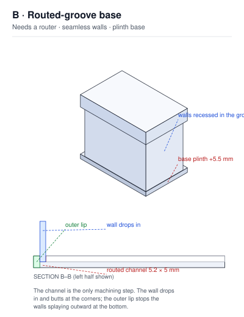
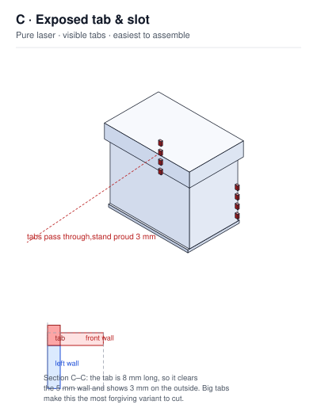

| A · Box joint | B · Routed groove | C · Exposed tabs | |
|---|---|---|---|
| Cutting process | Laser only | Laser + router | Laser only |
| Pieces / distinct shapes | 9 / 6 | 9 / 6 | 9 / 6 |
| Assembly moves | 3 | 4 | 4 |
| Glue or fasteners | none | none | none |
| Kerf sensitivity | High — fingers must be right | Low — 0.2 mm slop is invisible | Medium |
| Forgiving of mistakes | Low | High | High |
| Rigidity | Excellent — self-locking | Good — clamped by the lid | Good |
| Sheet thicknesses to stock | 5 mm only | 5 mm + 10 mm | 5 mm only |
| Build experience | Best — a real 3-move puzzle | Minimal | Good |
| Finished look | Craft — visible joinery | Cleanest | Industrial — tabs on show |
| Part | A · Box joint | B · Routed groove | C · Exposed tabs |
|---|---|---|---|
| Front / back wall ×2 | 154 × 130, castellated ends | 154 × 130, plain | 154 × 130, notched ends |
| Left / right wall ×2 | 94 × 130, castellated ends | 84 × 130, plain | 100 × 130, 8 mm tabs |
| Base plate ×1 | 154 × 94 × 5 | 165 × 105 × 10, routed channel | 160 × 100 × 5 |
| Lid top ×1 | 165 × 105 | 165 × 105 | 165 × 105 |
| Lid skirt ×4 | 165 × 22 and 95 × 22 | 165 × 22 and 95 × 22 | 165 × 22 and 95 × 22 |
| Assembled | 154 × 94 × 140 | 165 × 105 × 140 | 154 × 100 × 140 |
| Acrylic | 5 mm cast (Perspex® / Plexiglas® G). Not 3 mm — thin fingers chip |
| Interior | 144 × 84 × 130 mm, for a 140 × 80 × 125 mm booster box |
| Magnets | 8 × N42 neodymium 6 × 2 mm discs, 6.2 mm dia × 2 mm deep blind pockets |
| Magnet position | 11 mm below the top rim, one pair centred on each wall |
| Lid | Cap with a 22 mm skirt, outer 165 × 105 mm |